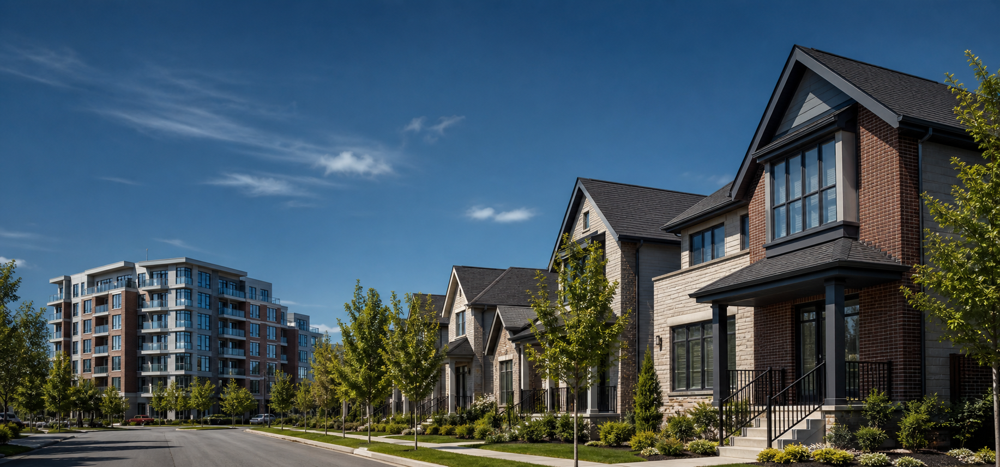

Data Readiness
Fields are renamed for clarity, calculated fields are added, and validation checks confirm null counts, ranges, and Tableau-ready formats.

Problem Definition
The project analyzes housing data to understand how sale price, renovation status, age, bedroom count, bathroom count, floor count, and basement area contribute to market patterns.
Fields are renamed for clarity, calculated fields are added, and validation checks confirm null counts, ranges, and Tableau-ready formats.
The dashboard combines KPIs, bar charts, and a renovation age distribution view to make housing trends easier to compare.
The workbook should use only required sheets, practical filters, and optimized views before publishing to Tableau Public.
Interactive Dashboard
Storyboard
Across the selected ages, bedroom values consistently dominate the grouped distribution, making them a stronger feature signal for comparison.
Renovation status helps separate older properties that have been updated from homes that may require additional investment.
Sales grouped by years since renovation reveal where updated houses cluster across price bins and help identify practical market positioning.